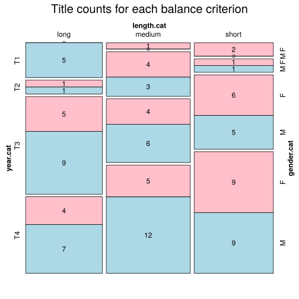

Click on a column heading to sort. Click on a text identifier to read the text (may not work in older browsers).
| Identifier | Encoding | Pages | Words | (Size) | Date (Slot) | Title | Author | Sex | Reprints |
|---|---|---|---|---|---|---|---|---|---|
| POL0001 |
eltec-1 | 66054 | (medium) | 1875 (T2) | Biały murzyn | Bałucki, Michał (1837-1901) | M | high | |
| POL0002 |
eltec-1 | 32595 | (short) | 1887 (T3) | Pan burmistrz z Pipidówki | Bałucki, Michał (1837-1901) | M | high | |
| POL0003 |
eltec-1 | 49056 | (short) | 1864 (T2) | Przebudzeni | Bałucki, Michał (1837-1901) | M | high | |
| POL0004 |
eltec-1 | 35609 | (short) | 1896 (T3) | Co będzie z naszego chłopca? | Grot-Bęczkowska, Wanda (1854-1925) | F | low | |
| POL0005 |
eltec-1 | 82956 | (medium) | 1898 (T3) | Kędy droga? | Grot-Bęczkowska, Wanda (1854-1925) | F | low | |
| POL0006 |
eltec-1 | 53885 | (medium) | 1899 (T3) | W mieszczańskim gnieździe | Grot-Bęczkowska, Wanda (1854-1925) | F | low | |
| POL0007 |
eltec-1 | 38983 | (short) | 1937 (T4) | Diogenes w kontuszu | Berent, Wacław (1873-1940) | M | low | |
| POL0008 |
eltec-1 | 68502 | (medium) | 1911 (T4) | Ozimina | Berent, Wacław (1873-1940) | M | low | |
| POL0009 |
eltec-1 | 80318 | (medium) | 1903 (T4) | Próchno | Berent, Wacław (1873-1940) | M | low | |
| POL0010 |
eltec-1 | 95601 | (long) !! | 1889 (T3) | Branki w jasyrze | Łuszczewska, Jadwiga (1834-1908) | F | low | |
| POL0011 |
eltec-1 | 88493 | (long) !! | 1893 (T3) | Panienka z okienka | Łuszczewska, Jadwiga (1834-1908) | F | low | |
| POL0012 |
eltec-1 | 47623 | (short) | 1879 (T2) | Zwierciadlana zagadka | Łuszczewska, Jadwiga (1834-1908) | F | low | |
| POL0013 |
eltec-1 | 132873 | (long) | 1903 (T4) | Dwór w Haliniszkach | Dmochowska, Emma (1864-1919) | F | low | |
| POL0014 |
eltec-1 | 50488 | (short) !! | 1914 (T4) | Jak odłamana gałąź | Dmochowska, Emma (1864-1919) | F | low | |
| POL0015 |
eltec-1 | 58742 | (medium) | 1907 (T4) | Obrączka | Dmochowska, Emma (1864-1919) | F | low | |
| POL0016 |
eltec-1 | 85595 | (medium) | 1932 (T4) | Kariera Nikodema Dyzmy | Dołęga, Tadeusz-Mostowicz (1898-1939) | M | high | |
| POL0017 |
eltec-1 | 98286 | (long) !! | 1939 (T4) | Pamiętnik pani Hanki | Dołęga, Tadeusz-Mostowicz (1898-1939) | M | high | |
| POL0018 |
eltec-1 | 80253 | (medium) | 1938 (T4) | Znachor | Dołęga, Tadeusz-Mostowicz (1898-1939) | M | high | |
| POL0019 |
eltec-1 | 62366 | (medium) | 1913 (T4) | Historia żółtej ciżemki | Domańska, Antonina (1853-1917) | F | low | |
| POL0020 |
eltec-1 | 34310 | (short) | 1914 (T4) | Krysia bezimienna | Domańska, Antonina (1853-1917) | F | low | |
| POL0021 |
eltec-1 | 43324 | (short) | 1910 (T4) | Paziowie króla Zygmunta | Domańska, Antonina (1853-1917) | F | low | |
| POL0022 |
eltec-1 | 40650 | (short) | 1896 (T3) | As | Dygasiński, Adolf (1839-1902) | M | high | |
| POL0023 |
eltec-1 | 86521 | (long) !! | 1890 (T3) | Pan Jędrzej Piszczalski | Dygasiński, Adolf (1839-1902) | M | low | |
| POL0024 |
eltec-1 | 15086 | (short) | 1884 (T3) | Wilk, psy i ludzie | Dygasiński, Adolf (1839-1902) | M | low | |
| POL0025 |
eltec-1 | 90002 | (long) !! | 1898 (T3) | Kato | Godlewska, Ludwika (1863-1901) | F | low | |
| POL0026 |
eltec-1 | 24414 | (short) | 1899 (T3) | Kwiat aloesu | Godlewska, Ludwika (1863-1901) | F | low | |
| POL0027 |
eltec-1 | 54876 | (medium) | 1896 (T3) | Po zdrowie | Godlewska, Ludwika (1863-1901) | F | low | |
| POL0028 |
eltec-1 | 12103 | (short) | 1930 (T4) | Namiętność | Grabiński, Stefan (1887-1936) | M | low | |
| POL0029 |
eltec-1 | 32079 | (short) | 1924 (T4) | Salamandra | Grabiński, Stefan (1887-1936) | M | low | |
| POL0030 |
eltec-1 | 47046 | (short) | 1936 (T4) | Wyspa Itongo | Grabiński, Stefan (1887-1936) | M | low | |
| POL0031 |
eltec-1 | 193062 | (long) | 1857 (T1) | Grób Nieczui | Kaczkowski, Zygmunt (1825-1896) | M | high | |
| POL0032 |
eltec-1 | 131055 | (long) | 1853 (T1) | Murdelio | Kaczkowski, Zygmunt (1825-1896) | M | high | |
| POL0033 |
eltec-1 | 265075 | (long) | 1889 (T3) | Olbrachtowi rycerze | Kaczkowski, Zygmunt (1825-1896) | M | high | |
| POL0034 |
eltec-1 | 87234 | (long) !! | 1851 (T1) | Emeryt | Korzeniowski, Józef (1797-1863) | M | low | |
| POL0035 |
eltec-1 | 98233 | (long) !! | 1853 (T1) | Garbaty | Korzeniowski, Józef (1797-1863) | M | low | |
| POL0036 |
eltec-1 | 176017 | (long) | 1857 (T1) | Krewni | Korzeniowski, Józef (1797-1863) | M | low | |
| POL0037 |
eltec-1 | 54208 | (medium) | 1873 (T2) | Hrabina Cosel | Kraszewski, Józef Ignacy (1812-1887) | M | high | |
| POL0038 |
eltec-1 | 70511 | (medium) | 1880 (T3) | Pogrobek | Kraszewski, Józef Ignacy (1812-1887) | M | high | |
| POL0039 |
eltec-1 | 120959 | (long) | 1876 (T2) | Stara baśń | Kraszewski, Józef Ignacy (1812-1887) | M | high | |
| POL0040 |
eltec-1 | 54131 | (medium) | 1910 (T4) | A gdy odejdzie w przepaść wieczną | Krzemieniecka, Hanna (1866-1930) | F | low | |
| POL0041 |
eltec-1 | 38078 | (short) | 1928 (T4) | Fatum | Krzemieniecka, Hanna (1866-1930) | F | low | |
| POL0042 |
eltec-1 | 75740 | (medium) | 1923 (T4) | Lecą wichry! | Krzemieniecka, Hanna (1866-1930) | F | low | |
| POL0043 |
eltec-1 | 81758 | (medium) | 1869 (T2) | Czarne godziny | Łoziński, Władysław (1843-1913) | M | low | |
| POL0044 |
eltec-1 | 64737 | (medium) | 1887 (T3) | Hazardy | Łoziński, Władysław (1843-1913) | M | low | |
| POL0045 |
eltec-1 | 81758 | (medium) | 1899 (T3) | Oko proroka | Łoziński, Władysław (1843-1913) | M | low | |
| POL0046 |
eltec-1 | 50650 | (medium) | 1871 (T2) | Bożek Miljon | Marrené-Morzkowska, Waleria (1832-1903) | F | low | |
| POL0047 |
eltec-1 | 69608 | (medium) | 1874 (T2) | Mężowie i żony | Marrené-Morzkowska, Waleria (1832-1903) | F | low | |
| POL0048 |
eltec-1 | 65132 | (medium) | 1872 (T2) | Róża | Marrené-Morzkowska, Waleria (1832-1903) | F | low | |
| POL0049 |
eltec-1 | 170796 | (long) | 1912 (T4) | Gehenna | Mniszek, Helena (1878-1943) | F | high | |
| POL0050 |
eltec-1 | 48668 | (short) | 1910 (T4) | Ordynat michorowski | Mniszek, Helena (1878-1943) | F | high | |
| POL0051 |
eltec-1 | 120753 | (long) | 1909 (T4) | Trędowata | Mniszek, Helena (1878-1943) | F | high | |
| POL0052 |
eltec-1 | 31605 | (short) | 1911 (T4) | Adjutant następcy tronu | Morawska, Zuzanna (1840-1922) | F | low | |
| POL0053 |
eltec-1 | 38868 | (short) | 1911 (T4) | Na zgliszczach Zakonu | Morawska, Zuzanna (1840-1922) | F | low | |
| POL0054 |
eltec-1 | 27412 | (short) | 1885 (T3) | Wilcze gniazdo | Morawska, Zuzanna (1840-1922) | F | low | |
| POL0055 |
eltec-1 | 65886 | (medium) | 1873 (T2) | Marta | Orzeszkowa, Eliza (1841-1910) | F | high | |
| POL0056 |
eltec-1 | 100694 | (long) | 1878 (T2) | Meir Ezofowicz | Orzeszkowa, Eliza (1841-1910) | F | high | |
| POL0057 |
eltec-1 | 169047 | (long) | 1888 (T3) | Nad Niemnem | Orzeszkowa, Eliza (1841-1910) | F | high | |
| POL0058 |
eltec-1 | 45609 | (short) | 1894 (T3) | Ognisko rodzinne | Papi, Jadwiga (1843-1906) | F | low | |
| POL0059 |
eltec-1 | 21192 | (short) | 1883 (T3) | Szlachetne marzenia | Papi, Jadwiga (1843-1906) | F | low | |
| POL0060 |
eltec-1 | 33836 | (short) | 1904 (T4) | W słońcu | Papi, Jadwiga (1843-1906) | F | low | |
| POL0061 |
eltec-1 | 129085 | (long) | 1894 (T3) | Emancypantki | Prus, Bolesław (1847-1912) | M | high | |
| POL0062 |
eltec-1 | 198296 | (long) | 1897 (T3) | Faraon | Prus, Bolesław (1847-1912) | M | high | |
| POL0063 |
eltec-1 | 263173 | (long) | 1890 (T3) | Lalka | Prus, Bolesław (1847-1912) | M | high | |
| POL0064 |
eltec-1 | 326603 | (long) | 1909 (T4) | Chłopi | Reymont, Władysław Stanisław (1867-1925) | M | high | |
| POL0065 |
eltec-1 | 83455 | (medium) | 1896 (T3) | Komediantka | Reymont, Władysław Stanisław (1867-1925) | M | high | |
| POL0066 |
eltec-1 | 173882 | (long) | 1899 (T3) | Ziemia obiecana | Reymont, Władysław Stanisław (1867-1925) | M | high | |
| POL0067 |
eltec-1 | 45202 | (short) | 1920 (T4) | Lato leśnych ludzi | Rodziewiczówna, Maria (1864-1944) | F | high | |
| POL0068 |
eltec-1 | 59591 | (medium) | 1889 (T3) | Między ustami a brzegiem pucharu | Rodziewiczówna, Maria (1864-1944) | F | high | |
| POL0069 |
eltec-1 | 35761 | (short) | 1899 (T3) | Straszny dziadunio | Rodziewiczówna, Maria (1864-1944) | F | high | |
| POL0070 |
eltec-1 | 281837 | (long) | 1884 (T3) | Ogniem i mieczem | Sienkiewicz, Henryk (1846-1916) | M | high | |
| POL0071 |
eltec-1 | 174321 | (long) | 1896 (T3) | Quo vadis | Sienkiewicz, Henryk (1846-1916) | M | high | |
| POL0072 |
eltec-1 | 210389 | (long) | 1895 (T3) | Rodzina Połanieckich | Sienkiewicz, Henryk (1846-1916) | M | high | |
| POL0073 |
eltec-1 | 64359 | (medium) | 1910 (T4) | Dzieje jednego pocisku | Strug, Andrzej (1871-1937) | M | low | |
| POL0074 |
eltec-1 | 89503 | (long) !! | 1925 (T4) | Pokolenie Marka Świdy | Strug, Andrzej (1871-1937) | M | low | |
| POL0075 |
eltec-1 | 139338 | (long) | 1933 (T4) | Żółty krzyż | Strug, Andrzej (1871-1937) | M | low | |
| POL0076 |
eltec-1 | 44297 | (short) | 1915 (T4) | Drygałowie | Świętochowski, Aleksander (1849-1938) | M | low | |
| POL0077 |
eltec-1 | 22604 | (short) | 1896 (T3) | Tragikomedya prawdy | Świętochowski, Aleksander (1849-1938) | M | low | |
| POL0078 |
eltec-1 | 45993 | (short) | 1936 (T4) | Twinko | Świętochowski, Aleksander (1849-1938) | M | low | |
| POL0079 |
eltec-1 | 47523 | (short) | 1884 (T3) | Na skałach Calvados | Sygietyński, Antoni (1850-1923) | M | low | |
| POL0080 |
eltec-1 | 40324 | (short) | 1918 (T4) | Święty ogień | Sygietyński, Antoni (1850-1923) | M | low | |
| POL0081 |
eltec-1 | 54834 | (medium) | 1891 (T3) | Wysadzony z siodła | Sygietyński, Antoni (1850-1923) | M | low | |
| POL0082 |
eltec-1 | 59634 | (medium) | 1913 (T4) | Gromada | Weyssenhoff, Józef (1860-1932) | M | low | |
| POL0083 |
eltec-1 | 28240 | (short) | 1906 (T4) | Narodziny działacza | Weyssenhoff, Józef (1860-1932) | M | low | |
| POL0084 |
eltec-1 | 63400 | (medium) | 1912 (T4) | Soból i panna | Weyssenhoff, Józef (1860-1932) | M | low | |
| POL0085 |
eltec-1 | 34812 | (short) | 1933 (T4) | Jedyne wyjście | Witkiewicz, Stanisław Ignacy (1885-1939) | M | low | |
| POL0086 |
eltec-1 | 206917 | (long) | 1930 (T4) | Nienasycenie | Witkiewicz, Stanisław Ignacy (1885-1939) | M | low | |
| POL0087 |
eltec-1 | 128659 | (long) | 1927 (T4) | Pożegnanie jesieni | Witkiewicz, Stanisław Ignacy (1885-1939) | M | low | |
| POL0088 |
eltec-1 | 101834 | (long) | 1888 (T3) | Kaśka Kariatyda | Zapolska, Gabriela (1857-1921) | F | high | |
| POL0089 |
eltec-1 | 70554 | (medium) | 1913 (T4) | Kobieta bez skazy | Zapolska, Gabriela (1857-1921) | F | low | |
| POL0090 |
eltec-1 | 108195 | (long) | 1904 (T4) | Sezonowa miłość | Zapolska, Gabriela (1857-1921) | F | low | |
| POL0091 |
eltec-1 | 151924 | (long) | 1908 (T4) | Dzieje grzechu | Żeromski, Stefan (1864-1925) | M | high | |
| POL0092 |
eltec-1 | 87994 | (medium) | 1924 (T4) | Przedwiośnie | Żeromski, Stefan (1864-1925) | M | high | |
| POL0093 |
eltec-1 | 65554 | (medium) | 1898 (T3) | Syzyfowe prace | Żeromski, Stefan (1864-1925) | M | high | |
| POL0094 |
eltec-1 | 50303 | (short) !! | 1858 (T1) | Biała róża | Żmichowska, Narcyza (1819-1876) | F | low | |
| POL0095 |
eltec-1 | 65589 | (medium) | 1848 (T1) | Książka pamiątek | Żmichowska, Narcyza (1819-1876) | F | low | |
| POL0096 |
eltec-1 | 37362 | (short) | 1846 (T1) | Poganka | Żmichowska, Narcyza (1819-1876) | F | low | |
| POL0097 |
eltec-1 | 64507 | (medium) | 1903 (T4) | Na srebrnym globie | Żuławski, Jerzy (1874-1915) | M | high | |
| POL0098 |
eltec-1 | 64507 | (medium) | 1914 (T4) | Powrót | Żuławski, Jerzy (1874-1915) | M | high | |
| POL0099 |
eltec-1 | 84111 | (medium) | 1910 (T4) | Zwycięzca | Żuławski, Jerzy (1874-1915) | M | high | |
| POL0100 |
eltec-1 | 311 | 54705 | (medium) | 1920 (T4) | Po mlecznej drodze | Makuszyński, Kornel (1884-1953) | M | high |